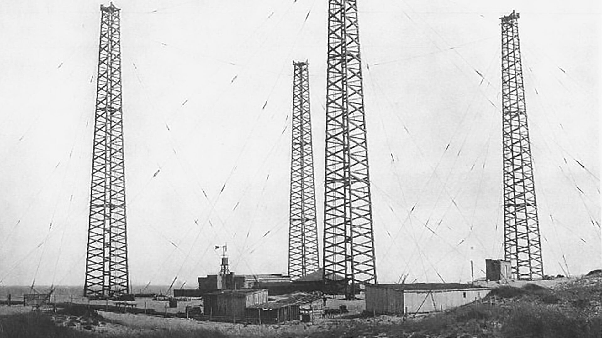
L’esigenza di regolamentare
Il 4 agosto 1903 si apre a Berlino la Conferenza Radiotelegrafica Internazionale; l’obiettivo è fissare regole comuni per la telegrafia senza fili ed evitare il monopolio della Compagnia Marconi.
Marconi non partecipa: preferisce un viaggio transatlantico sperimentale a bordo del Lucania, in cui effettua collegamenti con le sue stazioni di Poldhu, Cape Cod e Glace Bay.
La conferenza si rivela inconcludente. Nel 1906 una nuova conferenza, sempre a Berlino, approva una normativa a favore degli altri operatori, limitando di fatto il monopolio di Marconi.
The Need for Regulation
On August 4, 1903, the International Radiotelegraph Conference opened in Berlin; its objective was to establish common rules for wireless telegraphy and to prevent a monopoly by the Marconi Company.
Marconi did not attend, choosing instead to undertake an experimental transatlantic voyage aboard the Lucania, during which he established connections with his stations at Poldhu, Cape Cod, and Glace Bay.
The conference proved inconclusive. In 1906, a subsequent conference—also held in Berlin—approved regulations that favored other operators, effectively limiting Marconi’s monopoly.
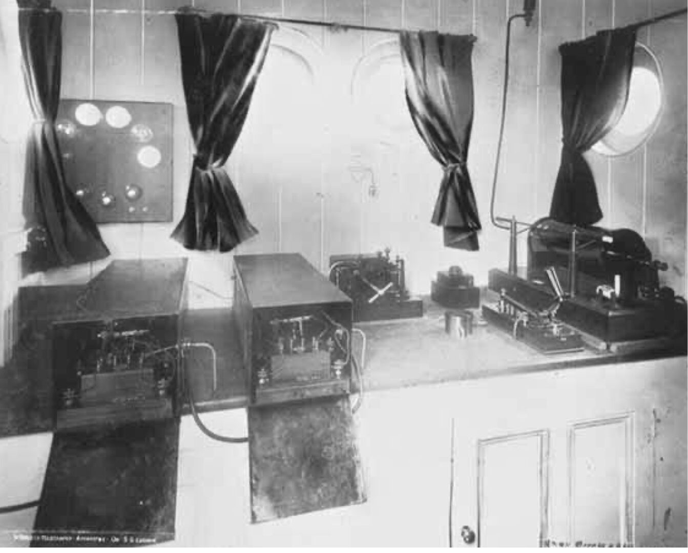
Gli esperimenti sul
Philadelphia
Nel febbraio 1902 Marconi si imbarca sul piroscafo Philadelphia, diretto a New York. Installa a bordo le sue strumentazioni e continua le sperimentazioni, confermando che i collegamenti transatlantici sono fattibili. Raggiunge distanze di trasmissione notevoli, fra i 2.400 e i 3.400 km. In quell’occasione nota che la propagazione delle onde radio è maggiore di notte rispetto al giorno.
Experiments Aboard the
Philadelphia
In February 1902, Marconi boarded the steamship Philadelphia, bound for New York. He installed his equipment on board and continued his experiments, confirming that transatlantic communication was feasible. He achieved significant transmission distances, ranging from 2,400 to 3,400 km. During this time, he observed that radio wave propagation is greater at night than during the day.
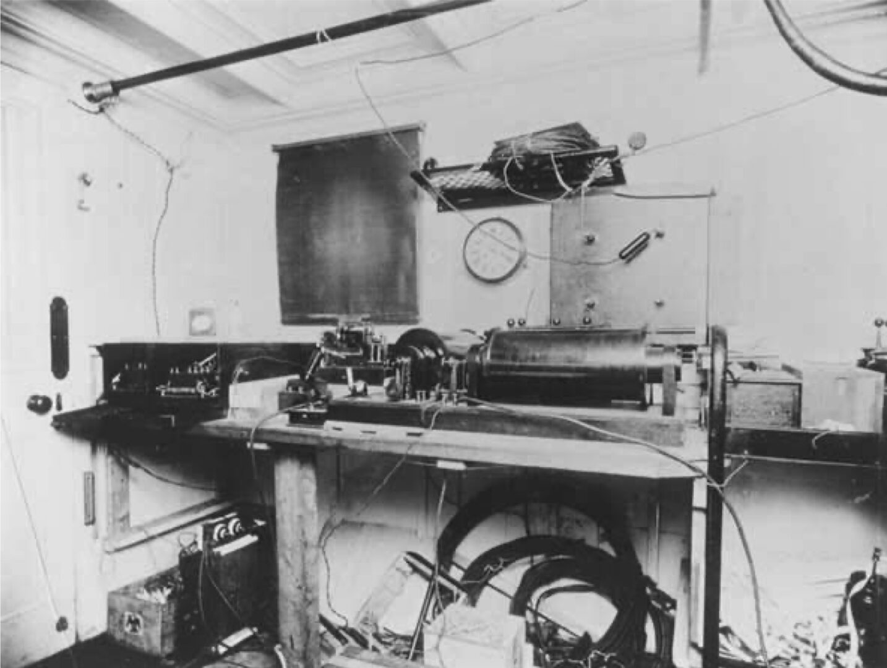
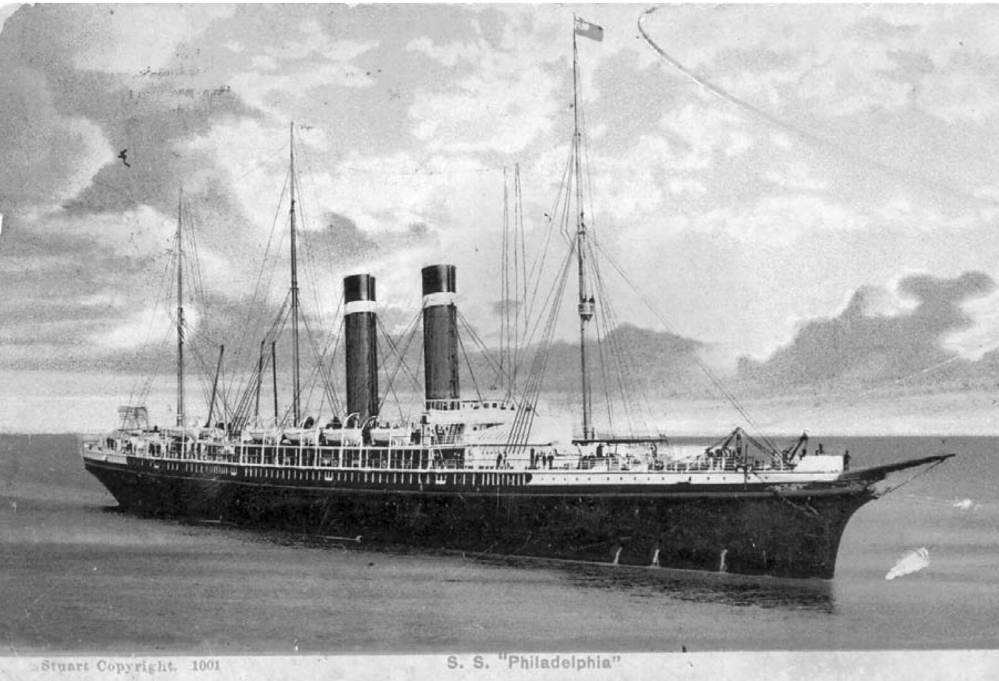
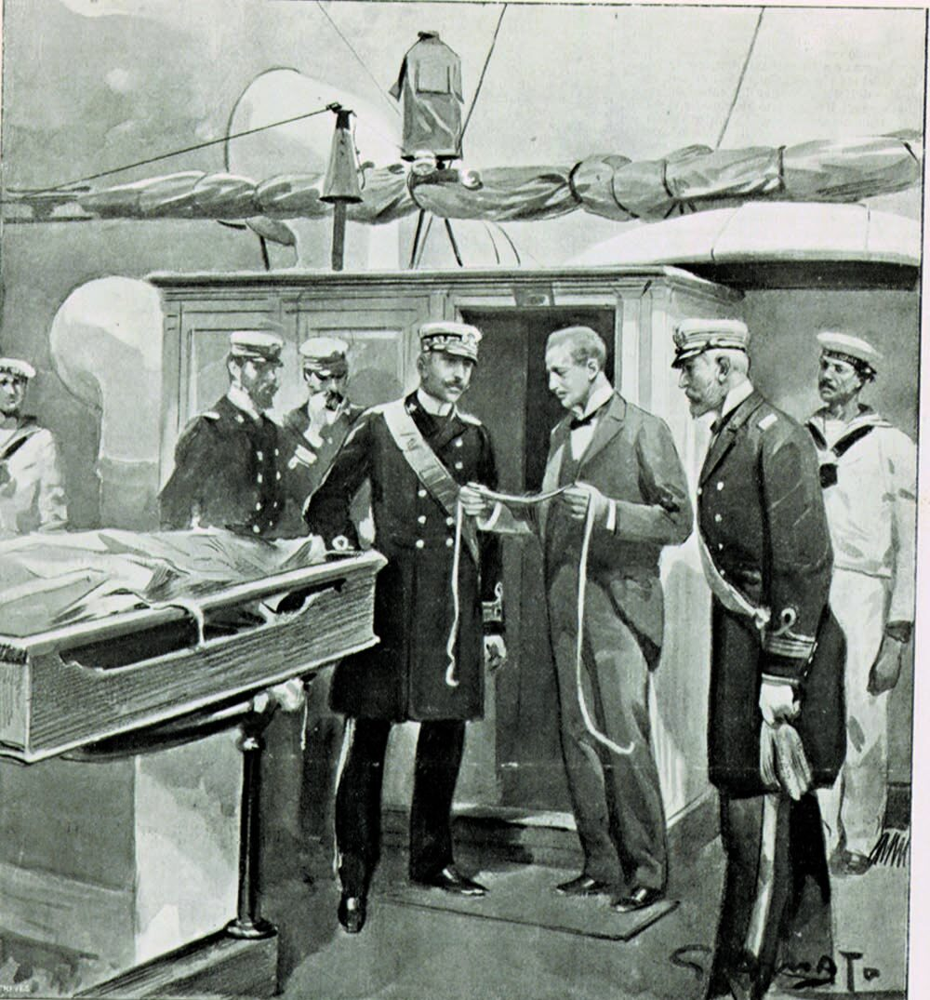
Le crociere sulla Carlo Alberto
Interessata agli esperimenti di Marconi, la Marina Militare Italiana gli affida la corazzata Carlo Alberto per due spedizioni scientifiche.
La prima salpa da Dover il 7 luglio 1902 verso Kronstadt, presso San Pietroburgo: il 16 luglio il Re Vittorio Emanuele III e lo Zar Nicola II si incontrano a bordo e assistono alle sue dimostrazioni, insieme allo scienziato Aleksandr Popov.
La seconda parte il 20 ottobre alla volta di Glace Bay: durante la traversata la nave riceve i segnali da Poldhu nonostante le burrasche e il 31 ottobre, giunto a destinazione, Marconi può dedicarsi al completamento della stazione.
Voyages Aboard the Carlo Alberto
Interested in Marconi’s experiments, the Italian Navy placed the battleship Carlo Alberto at his disposal for two scientific expeditions.
The first set sail from Dover on July 7, 1902, heading toward Kronstadt, near Saint Petersburg. On July 16, King Victor Emmanuel III and Tsar Nicholas II met aboard the vessel and witnessed his demonstrations, alongside the scientist Alexander Popov.
The second expedition departed on October 20, bound for Glace Bay. Throughout the crossing, the ship received signals from Poldhu despite severe storms; upon arrival on October 31, Marconi was able to focus on completing the station.
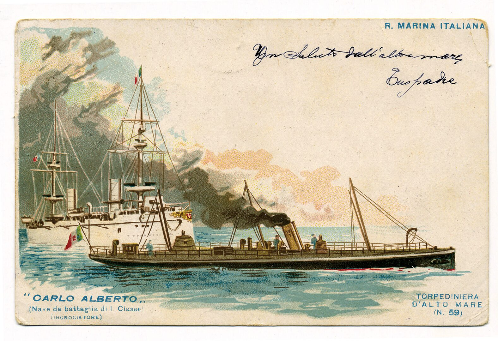
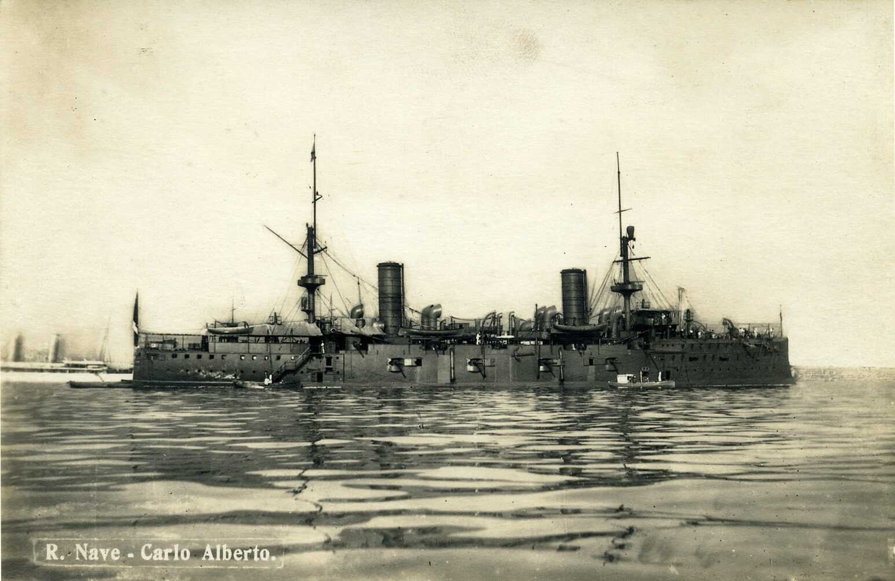
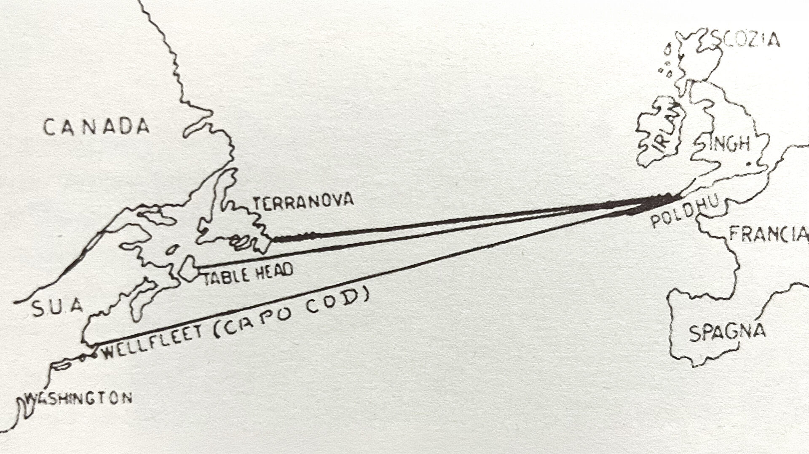
Il giornalismo
intercontinentale
Il 15 dicembre 1902 Sir George R. Parkin, corrispondente del “The Times” di Londra, invia da Glace Bay alla redazione un dispaccio storico di ben 555 parole: per la stampa internazionale e per il grande pubblico la validità del “sistema wireless Marconi” e il suo enorme potenziale diventano innegabili.
Tra il 18 e il 20 dicembre partono i messaggi ufficiali ai sovrani d’Inghilterra e d’Italia. Nel messaggio a Vittorio Emanuele III, Marconi esprime l’orgoglio di poter offrire alla propria patria il successo di aver unito stabilmente due continenti senza l’ausilio di cavi. Nella risposta il Re lo definisce «un vanto per la scienza italiana». Edoardo VII manifesta grande ammirazione, sottolineando il valore pratico della radiotelegrafia per la navigazione commerciale, la sicurezza marittima e i collegamenti imperiali.
Intercontinental
Journalism
On December 15, 1902, Sir George R. Parkin, a correspondent for The Times of London, sent a historic 555-word dispatch from Glace Bay to his newspaper’s editorial office. For the international press and the general public, the validity of the “Marconi wireless system” and its immense potential became undeniable.
Between December 18 and 20, official messages were sent to the sovereigns of England and Italy. In his message to Victor Emmanuel III, Marconi expressed his pride in being able to offer his homeland the achievement of having reliably linked two continents without the use of cables. In his reply, the King described him as “a source of pride for Italian science.” Edward VII expressed great admiration, highlighting the practical value of radiotelegraphy for commercial shipping, maritime safety, and imperial communications.
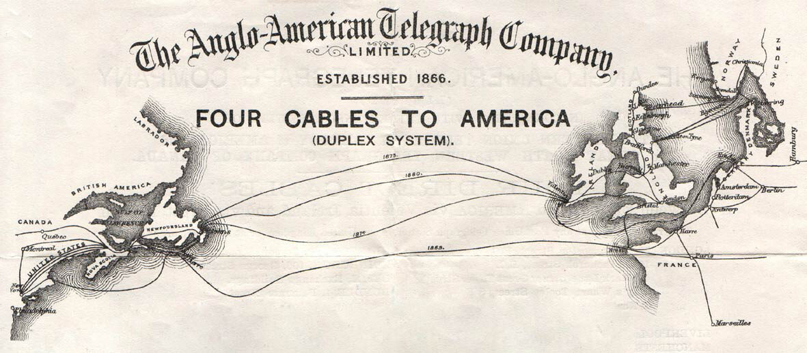
La guerra dei cavi
La Anglo-American Telegraph Company*, comunemente chiamata la Compagnia dei Cavi, concessionaria delle comunicazioni fra l’Europa e l’America, sostiene che l’esperimento compiuto da Marconi costituisce una violazione dei loro diritti commerciali e il 16 dicembre 1902 invia una diffida all’inventore intimandogli di sospendere gli esperimenti. A tal proposito Guglielmo Marconi afferma: «Sospesi gli esperimenti, ma ormai avevo vinto, le onde elettriche avevano varcato vittoriosamente l’Atlantico.»
Marconi sposta gli esperimenti a Glace Bay, presso Sydney in Nuova Scozia (Canada).
*La Anglo-American Telegraph Company viene fondata nel 1866. Con il suo piroscafo posacavi Great Eastern, posa il primo cavo telegrafico sottomarino duraturo attraverso l’Oceano Atlantico e detiene la concessione esclusiva per le comunicazioni transoceaniche.
The Cable War
The Anglo-American Telegraph Company*—commonly known as the “Cable Company”—which held the concession for communications between Europe and America, claimed that Marconi’s experiments infringed upon its commercial rights. On December 16, 1902, the company sent a formal notice to the inventor, demanding that he cease his experiments. Regarding this, Guglielmo Marconi stated: “I suspended the experiments, but I had already won; the electric waves had successfully crossed the Atlantic.”
Marconi subsequently relocated his experiments to Glace Bay, near Sydney, Nova Scotia (Canada).
*The Anglo-American Telegraph Company was founded in 1866. Using its cable-laying steamship, the Great Eastern, the company laid the first submarine telegraph cable across the Atlantic Ocean and held an exclusive concession for transoceanic communications.
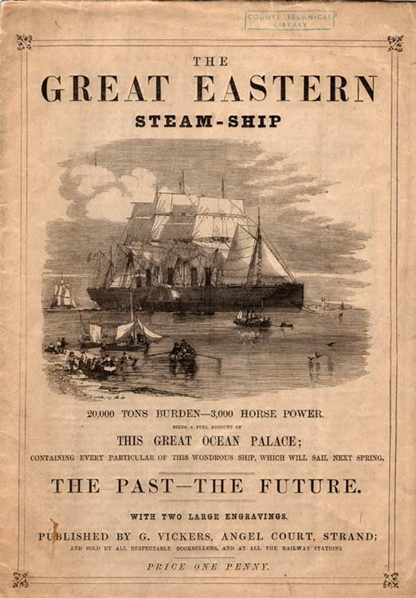
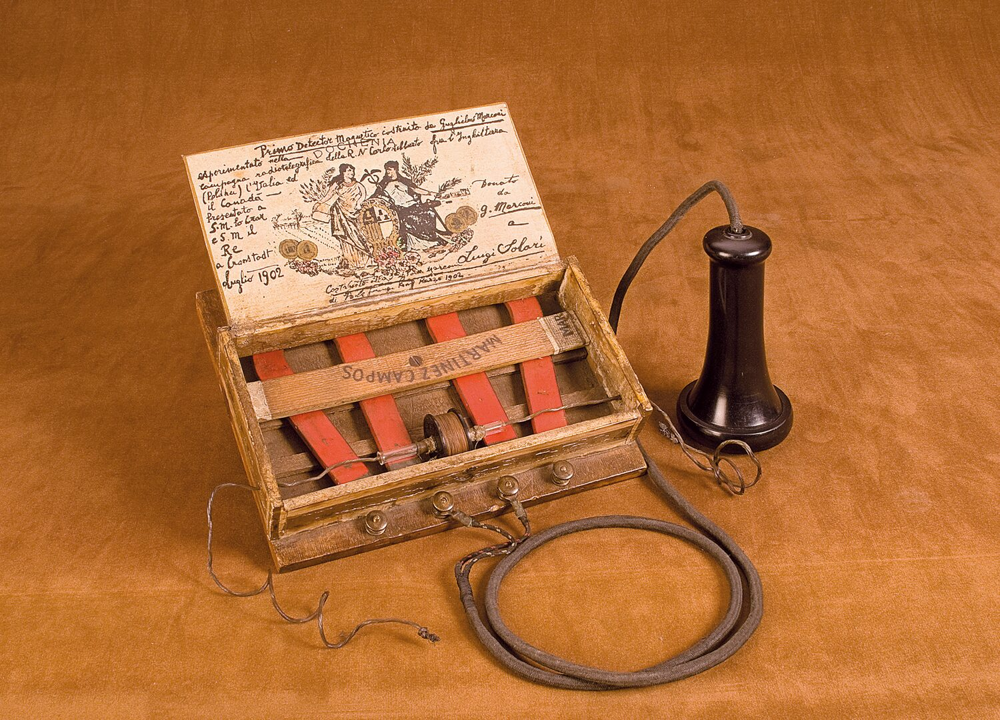
Il detector magnetico
Per superare le interferenze dei temporali Marconi sviluppa il detector magnetico, basandosi su una scoperta di Ernest Rutherford secondo la quale il nucleo ferroso su cui è avvolto un rocchetto di fili di rame si smagnetizza in presenza di onde elettromagnetiche irradiate da un oscillatore. Realizza il primo prototipo in una stanza d’albergo con una scatola di sigari ed altro materiale improvvisato.
Marconi lo definisce «il più pratico, il più costante e il più semplice ricevitore radiotelegrafico». Dopo aver messo a punto il progetto lo brevetta (n° 10245, 25 giugno 1902).
The Magnetic Detector
To overcome interference caused by thunderstorms, Marconi developed the magnetic detector. He based it on a discovery by Ernest Rutherford, which showed that an iron core—wrapped in a coil of copper wire—would become demagnetized when exposed to electromagnetic waves emitted by an oscillator. Marconi built his first prototype in a hotel room, using a cigar box and other improvised materials.
Marconi described it as “the most practical, the most consistent, and the simplest radiotelegraph receiver.” After refining the design, he patented it (No. 10245, June 25, 1902).